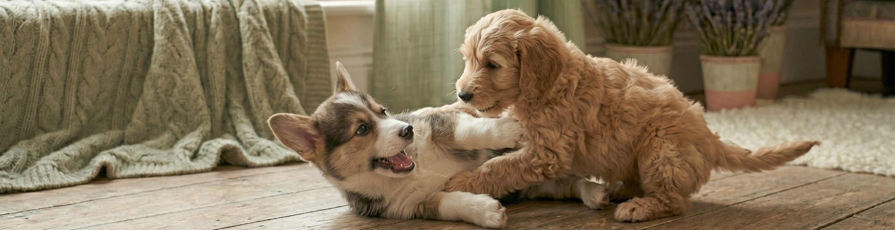

Making of / AI Lab / 2026
The Dashinator
A weekend browser extension that finds every lonely hyphen on a page and—with a soft little pop—promotes it to a full em-dash. It’s not useful. It’s essential. This is the “making-of” page format—use it to write up a project, an experiment, or a tool.
The idea
It started as a joke—most good things do. I was reading an article riddled with hyphens pretending to be em-dashes, and something in me snapped. Not loudly. Just—quietly—the way a designer snaps when the kerning is wrong. What if a tiny extension could fix the entire internet, one mark at a time?
It’s not a fix. It’s a crusade—with a toolbar icon.
This section is where you set up the project. What sparked it, who it’s for, and why you couldn’t let it go. Keep it human—the making-of is the part people actually read.
How it works
The whole thing is about forty lines. It walks the page’s text nodes, finds hyphens flanked by spaces, and swaps them for em-dashes—skipping code blocks, inputs, and anything that would scream if you touched it.
- A tree walker over visible text nodes — fast, and it ignores anything inside
<pre>or<code>. - One regex — space-hyphen-space becomes space-em-dash-space. That’s the entire brain.
- A mutation observer — so dynamically loaded content gets the treatment too. It’s not a one-shot; it’s vigilant.
Use a list like the one above for specs, ingredients, or steps. It’s the same bullet pattern the case studies use—consistent, scannable, calm.
What broke
Everything, briefly. Version one happily rewrote phone numbers, date ranges, and a stranger’s carefully formatted recipe. It turns out a hyphen isn’t always begging to be an em-dash—sometimes it’s just a hyphen, doing its quiet, honorable job. Humbling.
This is your “what I learned” beat. The honest, slightly self-deprecating part—where the project earns its credibility by admitting where it fell over.
Shipping it
I scoped it down, added an off-switch, and shipped a thing that does exactly one silly job well. Nobody needed it. A few people loved it. That’s not a failure—that’s the whole reason to build small things in the first place.
Close with where it lives, what’s next, or how to try it. Then—say it with me—replace all of this with your own project.
Placeholder making-of — part of the Portfolio Starter template.